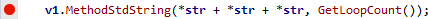
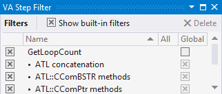

VA Step Filter
Step into the body of a method without stepping into, and out of, methods in its argument list. For example, step into MethodStdString() without stepping into the string class or GetLoopCount():

Create filters for the methods you want to step over. Use built-in filters to step over commonly used methods of standard libraries.

Learn more.